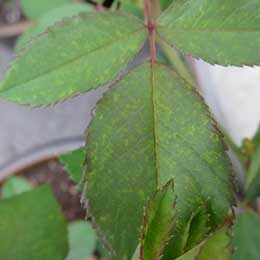

Symptoms: The leaves of a nitrogen deficient show an overall yellow or light green colour. Affect: Older leaves are more effected than the newr growth because nitrogen is mobile within the plant and will move from the older foliage to younger leaves.
Solution
Product: Macrofert 20:20:20 5gm/lit Soil/Drip: Benefit: Helps in vegetative growth, formation of amino acids
Phosphorous deficiency
Symptoms: Appearance of light pink colour on the older leaves. Affect: The first symptom of phosphorous deficiency leads to overall stunting of the leaves and shoot development is poor.
Symptoms: The first symptom of potassium deficiency is burning of leaf margins. Affect: Potassium deficiency may contribute to the production of blind shoots(new stems with no flowers).
Solution
Product: Fertimax 00:00:50 5gm/lit Soil/Drip: Benefit: Resistance to pests and diseases,opening and closing of stomata
Calcium deficiency
Symptoms: Calcium deficiency causing the tip to shorten,petal formation is reduced. Affect: Young leaves are distorted,older foliage become dull green and make curl down at the margins.
Symptoms: Leaf show general overall chlorosis while still retaining some green colour. Affect: The veins and petioles are very distinct reddish colour,tends to become more errect and often twisted and brittle.
Solution
Product: Primasulf 3-4ml/litt Soil/Drip:Sulfonite 5-10kg/acre Benefit: Improves special character in crop
Boron deficiency
Symptoms: Newly emerging leaves found to be malformed with incomplete laminar development. Affect: Severe interveinal chlorosis and incomplete leaf formation,Root and flower formation are inhibited.
Solution
Product: Boron 20 0.5-1gm/lit, Horticab-1-2ml/lit Soil/Drip: Benefit: Translocation of sugars and help in pollination
Zinc deficiency
Symptoms: This symptom shows early stages of younger leaves and the leaf lamina get reduced. Affect: Under severe deficiency flower setting is less.
Solution
Product: Chelamin foliar spray 1-2 gm/litr, Agromin max-2-3gm/lit Soil/Drip: Benefit: Helps in activation of enzymes
Iron deficiency
Symptoms: Appearance of pale yellow colour on the leaves. Affect: Symptoms starts on younger leaves.
Solution
Product: Chelafer1-2gm/lit, Agrofer-1-2gm/lit Soil/Drip: Benefit: Helps in electron transport chain and helps in photosynthesis

Manganese deficiency
Symptoms:Yellowing of younger leaves and veins remain green in colour. Affect: plant growth may be reduced and stunted.
Solution
Product: Mn-chel- 1-2 ml/lit of water or mobomin 1 gm/lit of water Soil/Drip: Benefit: Helps in nitrogen metabolism and involves in photosynthetic activity